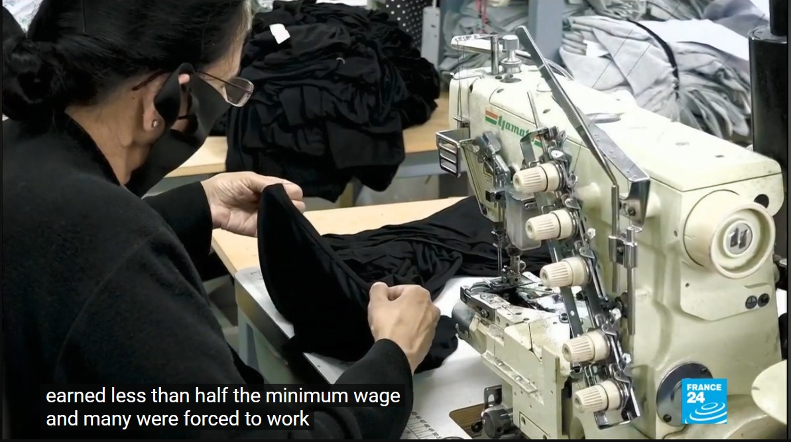
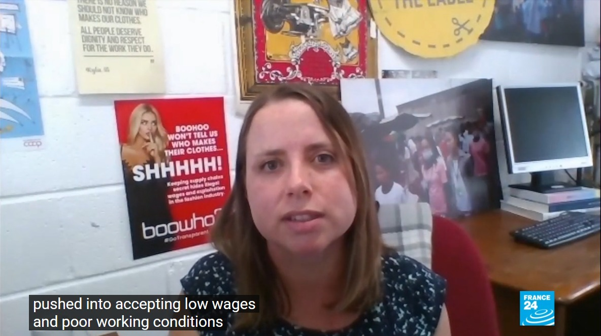
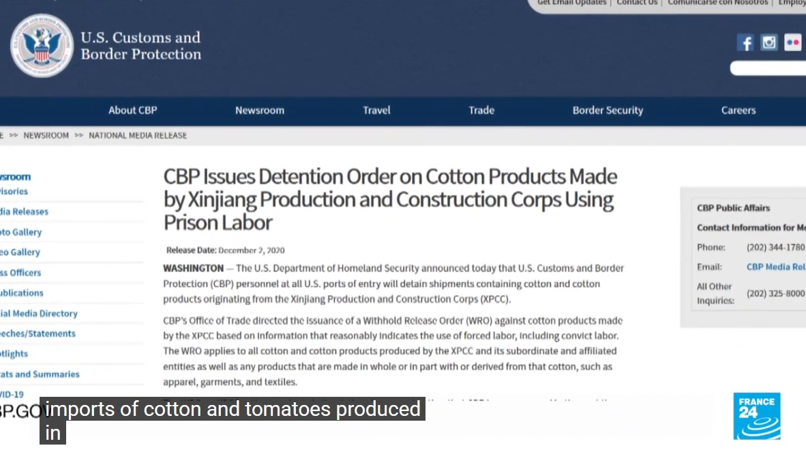

Scan to view on your phone
Key social violations documented in fashion and textile supply chains — from Xinjiang to Leicester.
Brands found complicit in suspected forced labor of Uyghurs in cotton and textile production in China's Xinjiang region.

Garment workers were paid less than half the legal minimum wage and many were forced to work under exploitative conditions.

Workers pushed into accepting poverty wages and unsafe factory conditions. Campaigners demand supply chain transparency from fast fashion brands.
Dilnur Reyhan, President of the European Uyghur Institute, calls for official acknowledgment of the Uyghur genocide and corporate accountability.

US Customs & Border Protection issued Withhold Release Orders on cotton and tomatoes from Xinjiang, citing evidence of forced/prison labor.
Why companies take an active interest in the social performance of their supply chains.
A brand is only as strong as its weakest link. If a supplier uses child labor or has unsafe factories, the public blames the buying company — not the supplier.
Suppliers that treat workers well have happier, healthier, and more stable workforces — meaning reliable production.
Laws like the German Supply Chain Act and Modern Slavery Acts hold companies legally responsible for human rights violations in their supply chain.
Practical steps to manage and improve supplier social performance.
Implement regular, independent third-party audits of suppliers using recognized standards like SA8000, BSCI, or Sedex/SMETA.
Move beyond policing to partnerships: invest in supplier development programs that raise social standards from within.